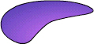

Using Director > Vector Shapes and Bitmaps > Vector shapes and bitmaps overview
Using Director > Vector Shapes and Bitmaps > Vector shapes and bitmaps overview |
Vector shapes and bitmaps overview
Vector shapes and bitmaps are the two main types of graphics used with Director. A vector shape is a mathematical description of a geometric form that includes the thickness of the line, the fill color, and additional features of the line that can be expressed mathematically. A bitmap defines an image as a grid of colored pixels, and it stores the color for each pixel in the image. A bitmap typically requires more RAM and disk space than a comparable vector shape. If not compressed, bitmaps take longer than vector shapes to download from the Internet. Fortunately, Director offers compression control to reduce the size of bitmaps in movies that you package to play on the Web. For more information about bitmap compression, see Compressing bitmaps.

Vector shape
Bitmap
A vector shape is most appropriate for a simple, smooth, clean-looking image. It typically includes less detail than a bitmap, but you can resize it without distortion. You can use Lingo to dynamically control a vector shape. You can create a vector shape entirely with Lingo or modify an existing one as the movie plays. Because vector shapes are stored as mathematical descriptions, they require less RAM and disk space than an equivalent bitmap image and they download faster from the Internet.
You can create vector shapes in the Director Vector Shape window by defining points through which a line passes. The shape can be a line, a curve, or an open or closed irregular shape that can be filled with a color or gradient.
Bitmaps are suited for continuous tone images, like photographs. You can easily make minute changes to a bitmap by editing single pixels, but resizing the image can cause distortion as pixels are redistributed. Anti-aliasing is a Director feature that blends the bitmap's colors with background colors around the edges to make the edge appear smooth instead of jagged.
You can create bitmaps in the Paint window or import them from any of the popular image editors in most of the popular formats, including GIF and JPEG. Director can also import bitmaps with alpha channel (transparency) data and animated GIFs. The Paint window includes a variety of tools for editing and applying effects to bitmaps.